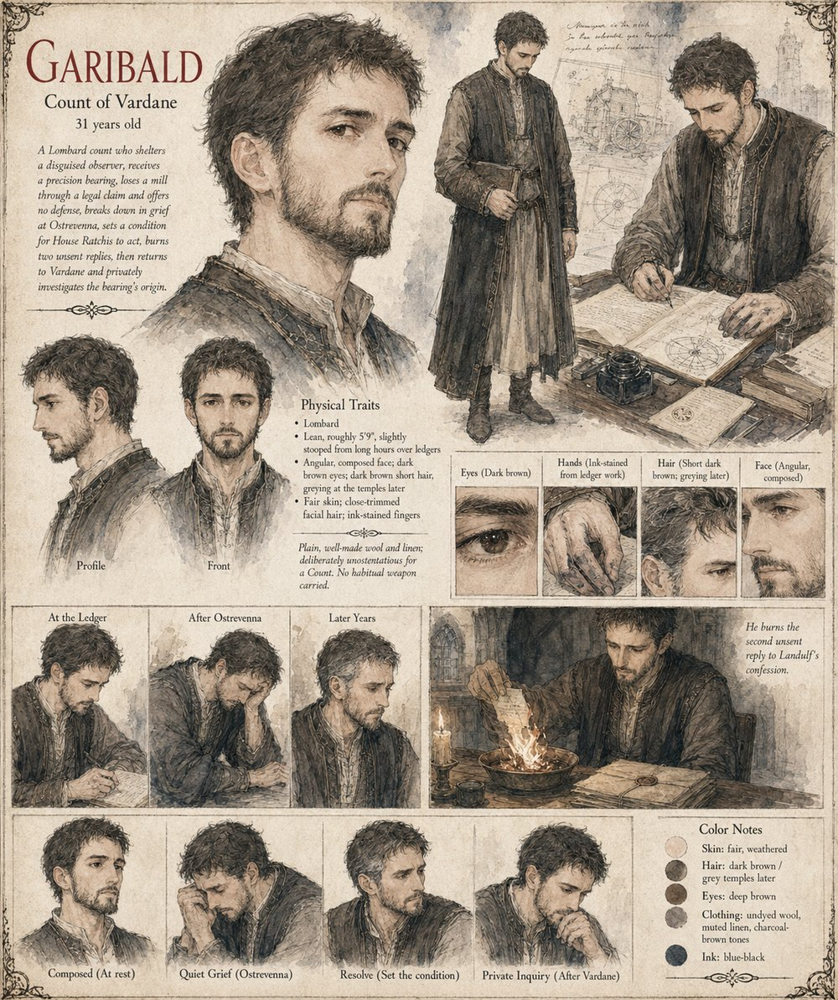

Garibald
Count of Vardane · 31 when the clockmaker comes
Count of Vardane, a man who made peace with arithmetic before he made peace with anything else, and keeps his own ledgers in a hand precise enough to embarrass his clerks. He shelters a traveling stranger — one of dozens he's sheltered that year without asking much beyond honesty about their business — and the man installs a single dull grey sphere in the county mill before vanishing three days later. When Baron Landulf files a legal claim on the strength of it, Garibald offers no defense, on the private theory that a truth he can't prove would only make the loss look like a lie besides, and breaks down completely at his family's seat, Ostrevenna — the first time anyone has ever seen him do so.
He sets exactly one condition on House Ratchis reclaiming the mill for him: that it cost Landulf nothing beyond what the war his own claim set in motion has already cost him. He returns to Vardane five years later to a wheel still turning, a miller two winters dead, and a set of questions about the clockmaker's real purpose that his own private notes never quite answer.
“Keep the ledger current.”
Appears in The Third Grain